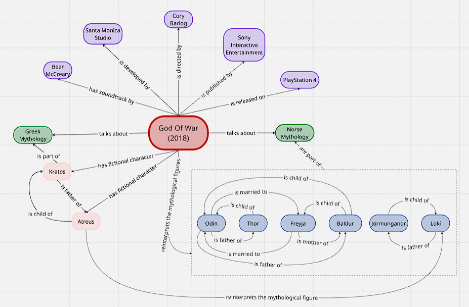

Choosing the topic
The task of the exam project was to pick a single Wikipedia article and lift its content into a Linked Open Data workflow. Wikipedia is uneven terrain for this: some pages are dense with well-catalogued entities (historical figures, works of art) and some are thin (recent events, niche subcultures). A good candidate needs enough named entities to reach the ten-entity threshold set in the guidelines, but it also needs a story worth telling — an angle where the exercise of formalising the article's content into RDF exposes something that plain prose does not.
The 2018 God of War Wikipedia article is such a candidate for two reasons. First, it is populated with well-attested entities: real people involved in production (Cory Barlog as director, Bear McCreary as composer), organisations (Santa Monica Studio, Sony Interactive Entertainment), the hardware platform (PlayStation 4), fictional protagonists (Kratos and Atreus), and a large cast of figures drawn from Norse mythology — all of whom have Wikidata entries, and the human production credits also carry VIAF identifiers. Second, and more interestingly, the article's central narrative device is the game's transition from Greek to Norse mythology and its subsequent reinterpretation of the source myths — a semantic move that turns out to be modellable but not with any single standard property. That gap is where the interesting work of this project happens.
Identifying the entities
Fifteen entities were selected across three layers of narrative distance from the game, plus two subject concepts. Entities were chosen on the criterion that (a) they are explicitly mentioned in the selected portion of the Wikipedia text, and (b) they carry a stable identifier in Wikidata that can serve as an anchor for reconciliation.
Production layer (5)
These are the real-world people and organisations that made the game, together with the hardware platform on which it was released.
| Entity | Type | Role | Wikidata |
|---|---|---|---|
| Cory Barlog | Person | Director | Q5173545 |
| Bear McCreary | Person | Composer | Q621437 |
| Santa Monica Studio | Organisation | Developer | Q656710 |
| Sony Interactive Entertainment | Organisation | Publisher | Q18594 |
| PlayStation 4 | Object | Platform | Q5014725 |
Fictional layer (2)
These are the two protagonists — the entities the article treats as protagonists of the game's narrative. Wikidata's entries for both refer to the game characters themselves.
| Entity | Type | Wikidata |
|---|---|---|
| Kratos | Fictional character | Q2291154 |
| Atreus | Fictional character | Q54896805 |
Mythological layer (6)
These are the six Norse figures the game features. Wikidata's entries for these refer to the mythological figures as attested in the source tradition — not to their in-game portrayals. This distinction becomes central to the modelling choices in Phase 2.
| Entity | Type | Wikidata |
|---|---|---|
| Odin | Mythological figure | Q43610 |
| Thor | Mythological figure | Q42952 |
| Freyja | Mythological figure | Q1647325 |
| Baldur | Mythological figure | Q131658 |
| Loki | Mythological figure | Q133147 |
| Jörmungandr | Mythological figure | Q181227 |
Concepts (2)
Two subject concepts appear across the article and organise the mythological figures under coherent schemes.
| Concept | Wikidata |
|---|---|
| Norse mythology | Q128285 |
| Greek mythology | Q34726 |
Entities considered and discarded
Two entities were initially in the set but were dropped or exchanged during the encoding pass, and the reasoning is worth recording because it says something about how entity selection should relate to actual textual anchors.
Runes were included in the first entity list as a recurring concept of the game — they appear as etchings on Kratos's Leviathan Axe and as symbols throughout the visual design. But when the Wikipedia text was selected for TEI encoding, none of the chosen sections mentioned runes explicitly. Keeping the entity would have meant defining it in the taxonomy without any inline ref pointing to a text mention, which weakens the entity's status: an entity without a textual anchor is data-warehouse padding, not something the article actually organises. Runes were removed from the entity set on this ground.
Greek mythology was not in the initial set — the project's angle was Norse — but appears four times in the selected text (Introduction, Setting, and Development twice). It also carries interpretive weight: the game's whole narrative pivots on the transition from Greek to Norse mythology, and Kratos himself is described in the text as "the former Greek God of War". Modelling both mythologies as siblings under skos:Concept and both as dcterms:subject of the game produces a cleaner symmetric account than modelling only one. Greek mythology was added to replace Runes.
Theoretical model
The theoretical model captures, at a domain-agnostic level, the entities and relations that the encoded text needs to represent. It is expressed as a mind map produced in draw.io, organised in three colour-coded layers (production, fictional, mythological, plus concepts). Arrows are labelled with the natural-language relation they carry — "is directed by", "is developed by", "has main character", "reinterprets the mythological figure", "is father of", and so on. The mythological figures are grouped inside a dashed sub-container within the outer Norse mythology concept scheme so that the six reinterprets arrows do not fan out individually; a single arrow points at the sub-container and the interior structure carries the genealogical relations that survive to the RDF phase.

TEI/XML encoding
The article was encoded in TEI/XML with a separation between metadata, entity definitions, and running text. The teiHeader declares the source bibliography (the Wikipedia permalink, the consultation date, and the responsible parties) and, inside encodingDesc/classDecl, a taxonomy that carries the two subject concepts (Norse mythology and Greek mythology) with their Wikidata URIs expressed via @corresp attributes.
Individual entities live in a <standOff> block. Each real person and organisation carries an <idno type="Wikidata"> and, where applicable, an <idno type="VIAF">. Fictional characters carry only Wikidata (VIAF does not describe fictional entities). Mythological figures likewise carry only Wikidata, but semantically these identifiers point to the myth version, not the game version — a distinction that is honoured in Phase 3 by using a different reconciliation property. The taxonomy is used for the two concepts because <category> in TEI does not accept <idno> as a child element; @corresp on the category itself is the sanctioned workaround.
Two small encoding traps worth noting
The TEI namespace URI is http://www.tei-c.org/ns/1.0, not http://tei-c.org — using the latter is the single most common newcomer mistake and produces silently invalid files that no downstream tool will parse as TEI. Second, the & in the Wikipedia permalink (?title=…&oldid=…) must be escaped as & inside XML attribute values; a raw ampersand is a syntax error.
Inline annotation in the body follows a uniform pattern: every mention of one of the 15 entities is wrapped in the appropriate TEI element (persName, orgName, objectName, or rs type="concept") with an @ref attribute pointing to the local xml:id defined in the standoff. This gives the graph a clean two-step: from an inline mention, follow @ref to the standoff entry, then follow idno or @corresp to the external authority.
Textual phenomena
Beyond entities, the guidelines require the encoding of textual phenomena — quotations and citations. Direct-speech quotations from Cory Barlog and Bear McCreary are wrapped in <quote> elements with a @who attribute pointing to the speaker's standoff xml:id. This gives the HTML rendering a place to visually distinguish attributed speech from unattributed quoted phrases, and it gives any downstream RDF extraction a way to represent the utterance as a triple in its own right. Wikipedia footnote markers ("[26]", "[10]") are preserved as <ref type="citation"> and rendered as small superscript in the HTML.
HTML transformation
The TEI file is transformed into a self-contained HTML document by a Python script (tei_to_html.py) that uses lxml for parsing. The transformation walks the standoff to build an entity dictionary keyed by xml:id, then walks the body recursively and emits HTML with entities colour-coded by type. The tooltip on each entity shows its canonical name, its role, its Wikidata QID, and its VIAF identifier; clicking on it opens the corresponding Wikidata page. A sticky sidebar carries the table of contents and a legend of the entity colour scheme.
The five entity types have distinct colour treatments so the density and distribution of entities across sections is visible at a glance:
- Person — real people, fictional characters, and mythological figures
- Organisation — Santa Monica Studio, Sony Interactive Entertainment
- Object — PlayStation 4
- Concept — Norse mythology, Greek mythology
- Mythical place — Midgard, Asgard, Jötunheim, and the other six realms; not modelled as first-class entities but marked in the text
The Resources page links to the raw TEI file, the transformation script, and the generated HTML.